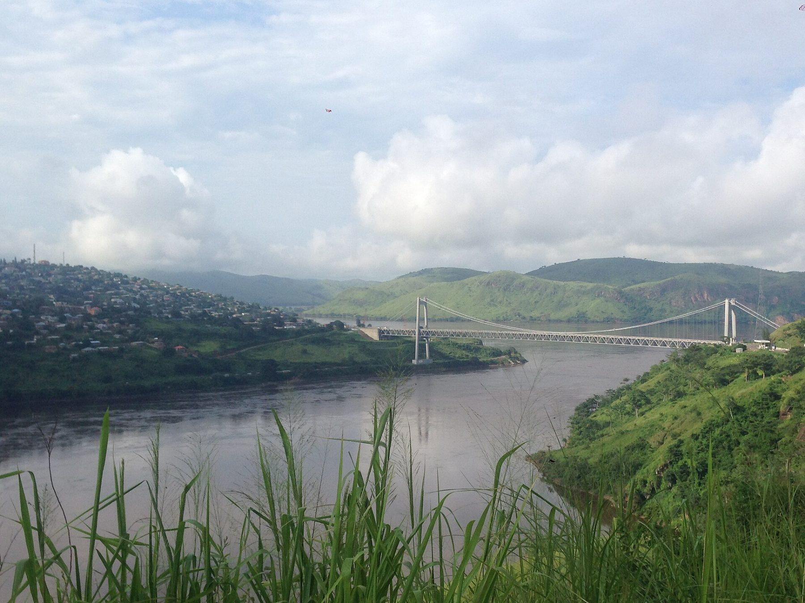
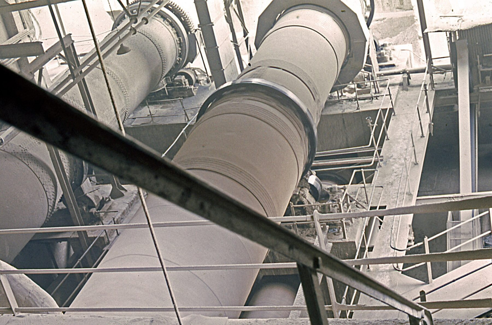
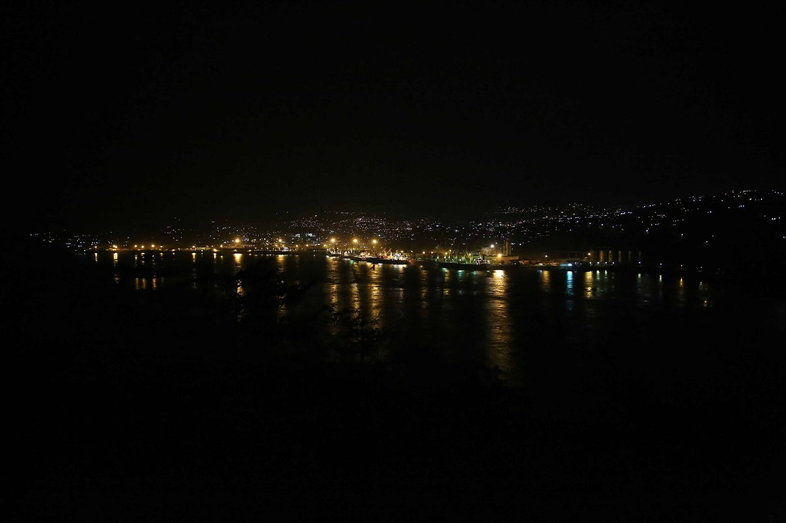

Who we are
Cimenterie du Fleuve SA is an integrated cement producer established in Matadi since 1974. Majority Congolese capital, 640 employees, one trade: building materials.
Our mission
Give Congolese builders a cement of constant quality, at the same price in every depot, made here with local limestone.
What guides us
Safety first
No tonne is worth an injury. Any employee may stop a dangerous task without justification.
Constant quality
Control at every step, from the blast to the bag, and tests on bags bought from retailers.
Local roots
Jobs, purchases and training first in Kongo Central, then in the DRC.
Accountability
Our safety and environmental indicators are published every year, good or bad.
Fifty years in Matadi
- 1974
First clinker burnt at Matadi, on a 300,000 t/yr wet-process kiln.
- 1996
Second cement mill and first automatic bagging line.
- 2009
Recapitalisation. Kiln converted to dry process, capacity raised to 1 Mt/yr.
- 2016
Kinshasa-Limete terminal opens, connected to the Matadi–Kinshasa railway.
- 2019
Limete batching plant, the company's first ready-mix concrete.
- 2022
ISO 9001 and ISO 14001 certification of the plant and quarry.
- 2025
First barge convoy to Mbandaka. Boma depot.
- 2026
120 t/h vertical mill. Kikwit depot.

Rotary kilns, illustrative photo (Sundon, United Kingdom · Dylan Moore, CC BY-SA 2.0).

Matadi harbour and the river at night (MONUSCO Photos, CC BY-SA 2.0).
Leadership
Civil engineer, 22 years in cement in Central Africa, including eight running the Matadi plant before becoming CEO in 2023.
Process engineer trained in Lubumbashi and Lyon. He led the conversion of the kiln to dry process and the vertical-mill project.
Chartered accountant, former auditor, in charge of relations with banks and insurers.
Runs the distributor network, the Kinshasa terminal and the rail, road and river transport contracts.
Responsible for product quality, the safety of 640 employees and contractors and environmental compliance.
Manages tenders, supplier registration and the local-content programme.
Governance
Public limited company with a seven-member board, three of them independent. Quarterly audit and HSE committees. Accounts audited every year and filed with the Matadi commercial court registry.
Shareholders
| 52% | Congolese industrial group |
| 30% | International cement partner |
| 12% | Regional development fund |
| 6% | Employees and managers |
Illustrative figures: fictitious company created for demonstration.